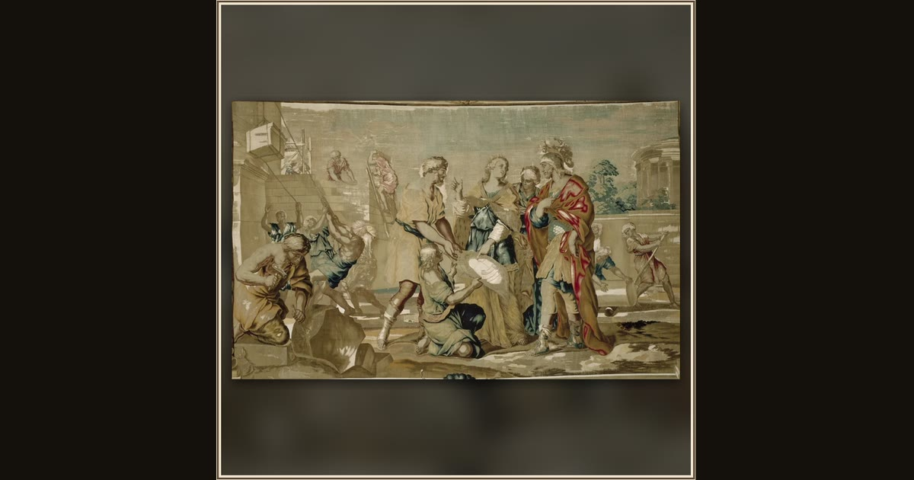

Dido shows Aeneas the plans for the fortifications of Carthage
Giovanni Francesco Romanelli (designer); Michael Wauters (weaver) · 1679 · cma
Dido shows Aeneas plans for Carthage's fortifications while workers build the walls; Aristotle argues that strong city walls help protect residents from attack (7.1331a) Explore its place in Aristotle's Politics, Book VII, section 17.